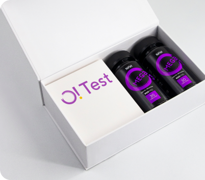

Простой и надежный инструмент, который позволяет оценить текущее состояние организма, увеличить ресурсы своего организма и почувствовать себя лучше с помощью персонализированной коррекции продуктами VILAVI.
Жирные кислоты омега-3 важны для бесчисленных аспектов нашего здоровья, от нейронов до клеток сердца, от сетчатки глаз до капилляров, но многие из нас не знают, как определить, получаем ли мы их достаточно. Более того, большинство ничего не знают об Омега-3.
По разным данным, у 80 - 97% населения есть дефицит омега-3 кислот!
Знаете ли вы сколько омега-3 у вас?
Определяем признаки дефицита омега-3
Какие признаки у вас есть?
Отметьте все признаки, которые у вас есть.
Омега-3 индекс отражает уровень содержания двух наиболее значимых омега-3 полиненасыщенных жирных кислот, является доступным для регуляции (с помощью коррекции питания) и позволяет оценить риск внезапной сердечной смерти, инфаркта миокарда и других сердечно-сосудистых и нейродегенеративных заболеваний.

Этапы проведения O! Test

1. Вы делаете анализ в комфортной обстановке
В наборе есть все необходимое для того, чтобы сделать тест. Анализ проводится с использованием специально подготовленной тест полоски, позволяющей хранить и транспортировать “сухую кровь” в лабораторию. Вы самостоятельно собираете кровь на тест полоску в удобное время.
2. Мы вызываем курьера в удобное время
Бесплатно вызываем вам курьера и далее анализ передается в лабораторию где производится исследование (190013, г. Санткт-Петербург, Московский проспект, д. 22 л, пом. 25-н, комн. 1.)
3. Получаете быстрый результат на почту
В лаборатории проводится исследование и вы получаете результат анализа на электронную почту через неделю.
4. Мы отправляем персональный протокол коррекции
Данные, полученные в ходе исследования, являются основным критерием для выбора оптимального протокола приема продуктов для коррекции Омега-3.
5. Проводите коррекцию омега-3
Принимаем продукты, рекомендованные в протоколе коррекции.

6. Отслеживаете результаты в динамике
Улучшение состояния здоровья — динамичный процесс. Через 2 месяца приема рекомендованных продуктов из Вашей персональной программы коррекции делаем контрольный анализ омега-3 и сравниваем результаты до и после.
Видео-инструкция:
Программы коррекции
Достижение желательного уровня омега-3 индекса возможно путем изменения рациона.
Программы коррекции — синергия функциональных продуктов VILAVI и рекомендаций по улучшению образа жизни, составленных вместе с экспертами-врачами для улучшения ресурсного состояния организма.
Интересный факт:
По статистическим оценкам, повышение омега-3 индекса на 2% (от 6% до 8%) приводит к 15% снижению сердечно-сосудистых рисков.Получили результат омега-3 индекса?
Введите свой результат и мы подберем программу коррекции
Вопрос-ответ
Для чего организму нужны омега-3 кислоты?
Омега-3 оказывают разностороннее влияние на человеческий организм. Они важны для полноценной работы головного мозга, эффективной работы системы кровообращения, нервной системы, правильного обмена веществ. Омега-3, улучшают вязкость крови, поддерживают активность лейкоцитов, снижают концентрацию гомоцистеина, аминокислоты, накопление, которой приводит к тромбообразованию.
Омега-3 стимулируют иммунную систему, обладают противовоспалительными свойствами, укрепляют природный защитный барьер от бактерий и вирусов, улучшают проницаемость клеточных мембран для кислорода, что приводит к быстрой доставке кислорода к тканям и клеткам, активирует производство гормонов, принимающих участие во всех биохимических клеточных процессах. Формируют мужские половые клетки, мембранные оболочки нейронов головного мозга, а также сетчатки глаз, поддерживают подвижность суставов, купирует болевой синдром при артритах и артрозах.
Омега-3 замедляют процессы старения, снижают аппетит и подавляют чувство голода, улучшают внимание, память, участвуют в обменных процессах гормона радости, снижая эмоциональное напряжение. Помогают сохранить здоровье волос, кожи, ногтей, помогают при планировании беременности подготовить организм, а также способствуют правильному развитию плода во время беременности.
Что такое омега-3 индекс?
Омега-3 индекс - суммарный процент эйкозапентаеновой (ЭПК ) и докозагексаеновой (ДГК) кислот от общего количества жирных кислот в мембране эритроцита. Омега-3 индекс отражает уровень содержания двух наиболее значимых омега-3 полиненасыщенных жирных кислот, является доступным для регуляции (с помощью коррекции питания) и позволяет оценить риск внезапной сердечной смерти, инфаркта миокарда и других сердечно-сосудистых и нейродегенеративных заболеваний.
Как сдать омега-3 индекс?
Это очень просто. Анализ проводится с использованием специально подготовленной тест полоски. Вы самостоятельно собираете кровь на тест полоску в удобное для Вас время. Далее анализ передается курьером в лабораторию, где производится исследование и вам высылаются результаты анализа по электронной почте. Данные, полученные в ходе исследования, являются основным критерием для выбора оптимального протокола приема продуктов для коррекции Омега-3.
Что такое программы коррекции?
Программы коррекции — синергия функциональных продуктов VILAVI и рекомендаций по улучшению образа жизни, составленных вместе с экспертами-врачами для улучшения ресурсного состояния организма.
Как подобрать программы коррекции?
Данные, полученные в ходе исследования омега-3 индекса, являются основным критерием для выбора оптимального протокола приема продуктов для коррекции Омега-3.